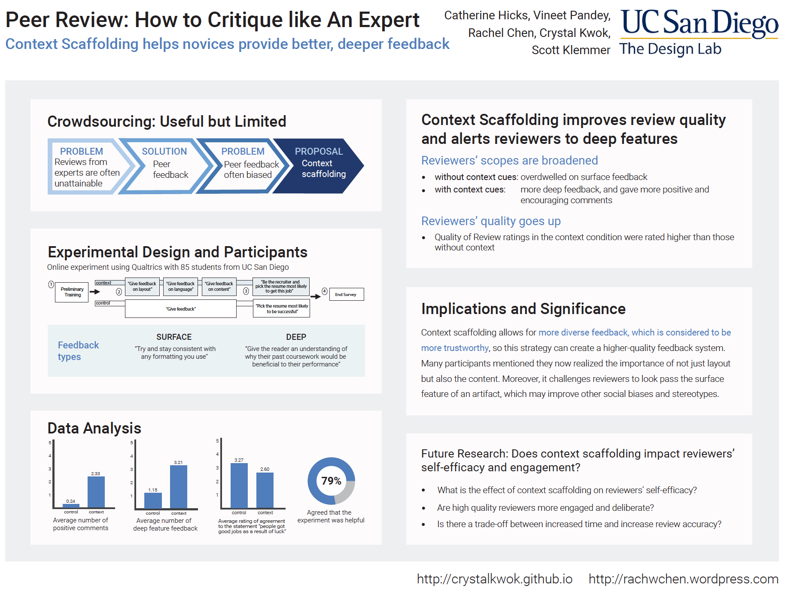
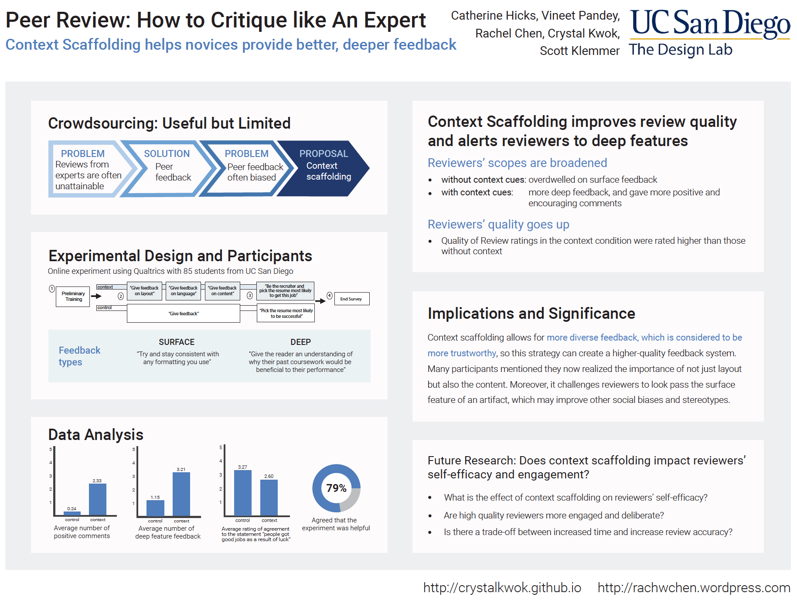
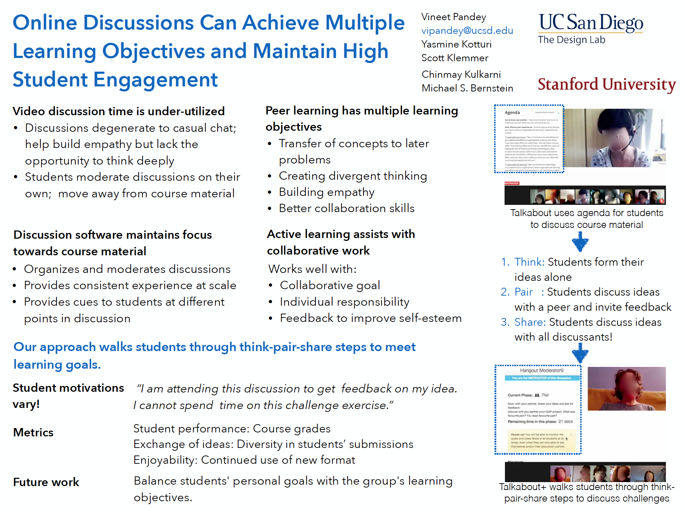

Updated: Apr 25, 2018


Travel
Gastro-entro thing, CHI 2016, CSCW 2016 I'm Vineet Pandey. I develop scalable techniques that enable groups of people to perform personally-meaningful work using online learning, expert materials, and intelligent technology  . My lifegoal is to enable people around the world to solve their own problems to live more meaningful and enjoyable lives. Building online systems that combine technology, community, and experts gets me closer to this goal.
. My lifegoal is to enable people around the world to solve their own problems to live more meaningful and enjoyable lives. Building online systems that combine technology, community, and experts gets me closer to this goal.
I am a Ph.D. candidate in Computer Science at UC San Diego. I work with Scott Klemmer at Design Lab. I've been ruined by my life experience in San Diego.
My research aims to teach anyone to perform science and then create novel knowledge using the scale and diversity of people on the internet. I hope this will make us discuss why our education and research institutions are so insular, especially in the age of internet, and provide some ideas about how we might move ahead. The knowledge of science impacts a diverse planet; in the future, this diverse community may importantly contribute to it. scientific social computing systems My research has been used xxx people over yyy countries. This work is in collaboration with the super-amazing folks at American Gut Project and Knight Lab, led by Professor Rob Knight at UC San Diego. Gut Instinct has 950 participants as of Oct 7, 2017. Join now! My systems have been published at premier HCI (CHI, UIST) and Learning Science (L@S) venues, and have been used by the American Gut Project (world's largest crowdfunded citizen science project) and Open Humans among others. complain about online learning -- “online learning hasn’t explored tight integration with the domain”
I completed my undergraduate in Computer Science in India at BITS Pilani (Pilani Campus). My undergraduate thesis (at Seoul National University, S. Korea) constructed efficient data stuctures for counting (JDA 2014, TAMC 2011). I worked as a research engineer at NetApp Advanced Technology Group to build new products (PATENTS), backpacked meeting amazing people, and built efficient integrity checks for databases (SIGMOD 2017). I'm lucky to have grown up in simpler times, in Ranchi, a small town in Eastern India.
Previously, I have built systems and created data structures for a range of problems including , quick failover in a clustered operating system (NetApp internal report), quick arithmetic operations w/ novel integer representations (Journal of Discrete Algorithms 2014, TAMC 2011) and efficient database indexing for flash memory (Journal in Korea - fun times!).
Research
Gut Instinct: Collaborating creating hypotheses
one-line summary: can be tweeted
Demo:
Live: gutinstinct.ucsd.edu

 News: http://designlab.ucsd.edu/trust-your-gut-vineet-pandey-and-team-win-first-prize-at-hde-conference/
News: http://designlab.ucsd.edu/trust-your-gut-vineet-pandey-and-team-win-first-prize-at-hde-conference/
 Collaborators: Knight Lab, Scott Klemmer, Open Humans
Collaborators: Knight Lab, Scott Klemmer, Open Humans
cite: bibtex
 Thesis proposal slides ;
Thesis proposal slides ;
Papers: CHI 2017, LAS 2018
posters: HDE 2017
 ,HCOMP 2016
,HCOMP 2016


 Papers: In Submission
Papers: In Submission
Other Projects
Cipherbase https://www.microsoft.com/en-us/research/group/database/
Framing Feedback: High-Quality Peer Assessment
summary:
web: http://d.ucsd.edu/framingFeedback
Papers: CHI 2016
 
Storytelling for learning

Storytelling for learning
summary: ...
learn more: ...
Papers: L@S 2016 (WiP)
Poster:
Talk:

Darwin - game theory
Research Exam
Technical Report w/ Tianyin
Integer representations
Proof: Publications, Patents, Posters
-
Under submission at CHI 2018
-
Gut Instinct: Creating Scientific Theories with Online Learners. Vineet Pandey, Amnon Amir, Justine Debelius, Embriette Hyde, Tomasz Kosciolek, Rob Knight, Scott Klemmer. CHI 2017, Denver, CO, May 2017.

-
Framing Feedback: Choosing Review Environment Features that Support High Quality Peer Assessment. Catherine M. Hicks, Vineet Pandey, C. Ailie Fraser, Scott Klemmer. CHI 2016, San Jose, CA, May 2016.
-
Concerto: A High Concurrency Key-Value Store with Integrity. Arvind Arasu, Ken Eguro, Raghav Kaushik, Donald Kossmann, Pingfan Meng, Vineet Pandey, Ravi Ramamurthy. SIGMOD 2017.
Work-in-Progress, Workshops etc.
-
[Workshop] Education across borders: Technology supported mentoring and teambuilding. Vineet Pandey. HCI Across Borders workshop at CHI 2016, San Jose, CA, May 2016.
-
Game-theoretic models identify useful principles for peer collaboration in online learning platforms. Vineet Pandey, Krishnendu Chatterjee. Work-in-Progress at CSCW 2016, San Francisco, CA, March 2016.

-
Connecting stories and pedagogy increases participant engagement in discussions. Vineet Pandey, Yasmine Kotturi, Chinmay Kulkarni, Michael Bernstein, Scott Klemmer. Work-in-Progress at Learning@Scale 2015, Vancouver, BC, March 2015.
-
Technical Report - An HCI View of Configuration Problems. Tianyin Xu, Vineet Pandey, Scott Klemmer. arXiv, Jan 2016.
Community: Talks, Students, Collaborators, and Teaching
MIT Teaching Systems Lab
Learning@Scale 2018
South Asia Initiative 2018
HBS lead-user innovation workshop
Thesis Proposal
Learning@Scale
CHI 2017
CHI 2016 by Catherine Hicks
Research Exam 2016
Committee: Scott, Rob, Don, Jim, Laurel
Collaborators: AGP, KL, Open Humans, Project Apollo, Lyme,
Students: Tushar, Chen, Liby, Cody, Aliyah, Orr, Kaung, Brian --link all with photos
add colonyB here: http://csb.cs.mcgill.ca/colonyb/